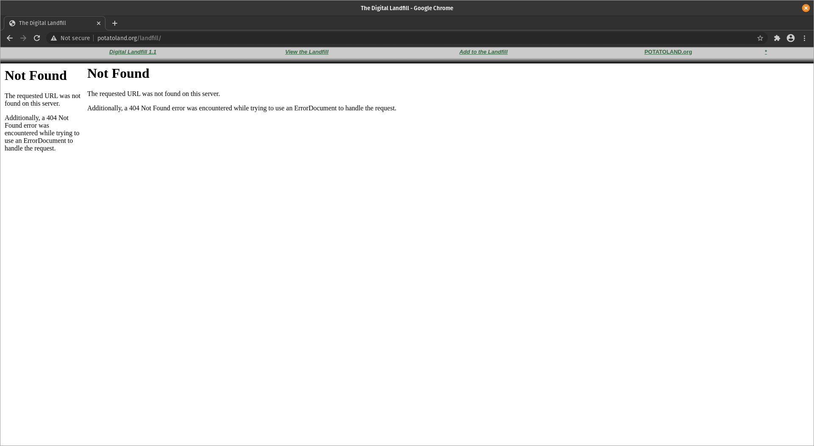

retrieved 2020-11-04
Digital Landfill (1998)
«Digital Landfill», one of Napier’s most well-known works of Net art, is a sort if virtual compost heap. The artist has developed an interface that allows a user to copy data from his or her own computer or from other Web sites, and thus, to put it plainly, to dump it. Within seconds, the data appears in various layers on the computer monitor. As if you were combing through dumping grounds layer by layer, you dig deeper and deeper into the overripe information. Besides the unreadable texts in this computer-generated collage, familiar icons from the Net appear here and there. The Yahoo! Logo, the homapage of the CIA, press releases from Microsoft and playmates from Playboy’s Web site emerge from the digital chaos, looking as if they really were slowly rotting there on Napier’s server, decaying on some Internet-based compost-heap. […] One could call «Digital Landfill» a work of automated Pop Art. The multiple layers of pop culture icons and ‹found footage› from the Internet are reminiscent of Robert Rauschenberg’s silk screens, with at least one obvious yet important difference: with «Digital Landfill», it’s not a single artist who determines the theme and its arrangement. The work is far more the result of the contributions of all its ‹users’› who end up creating a sort of collective art work. ~ source
Original link via Digital Art Archive